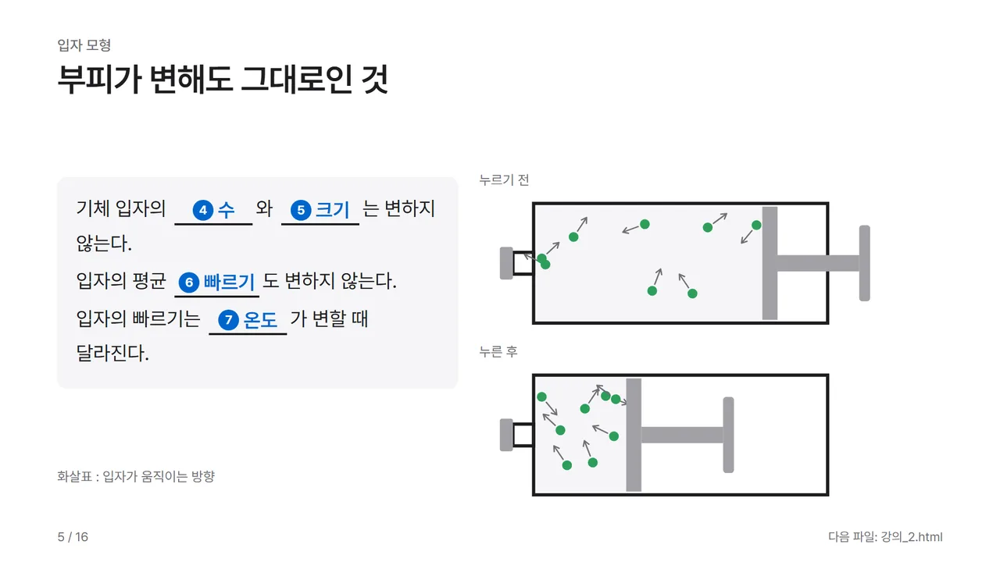
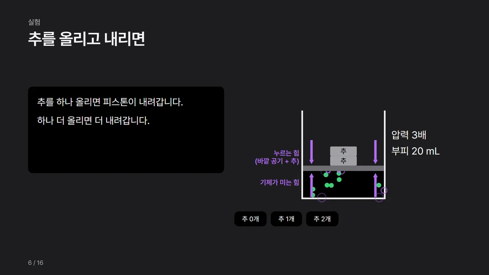
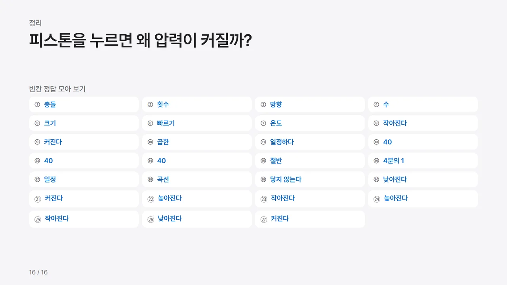
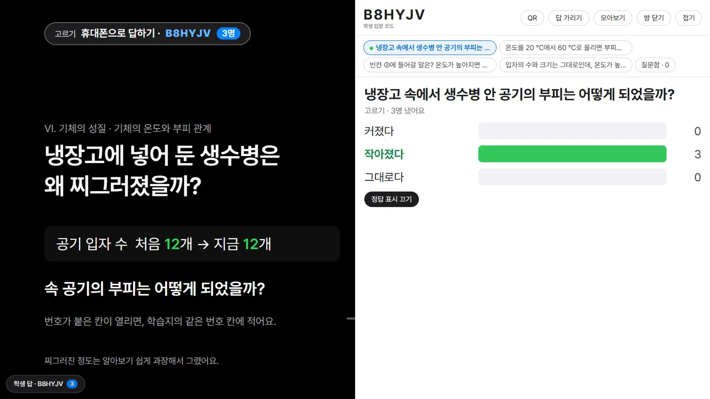
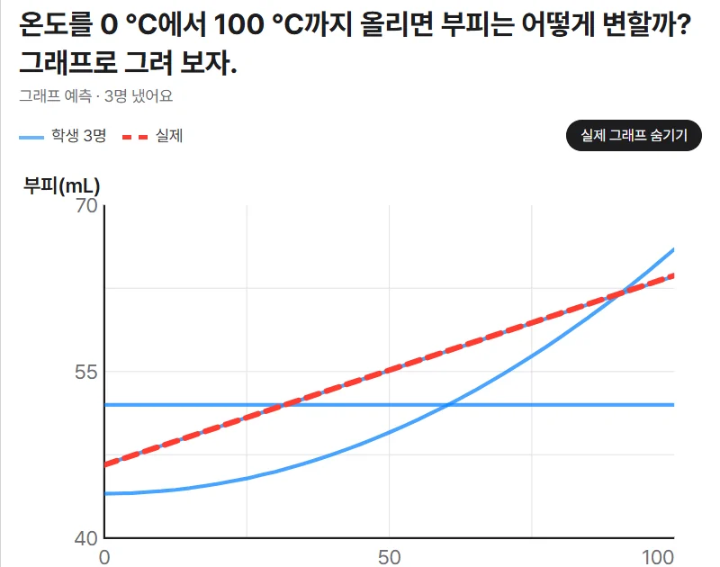
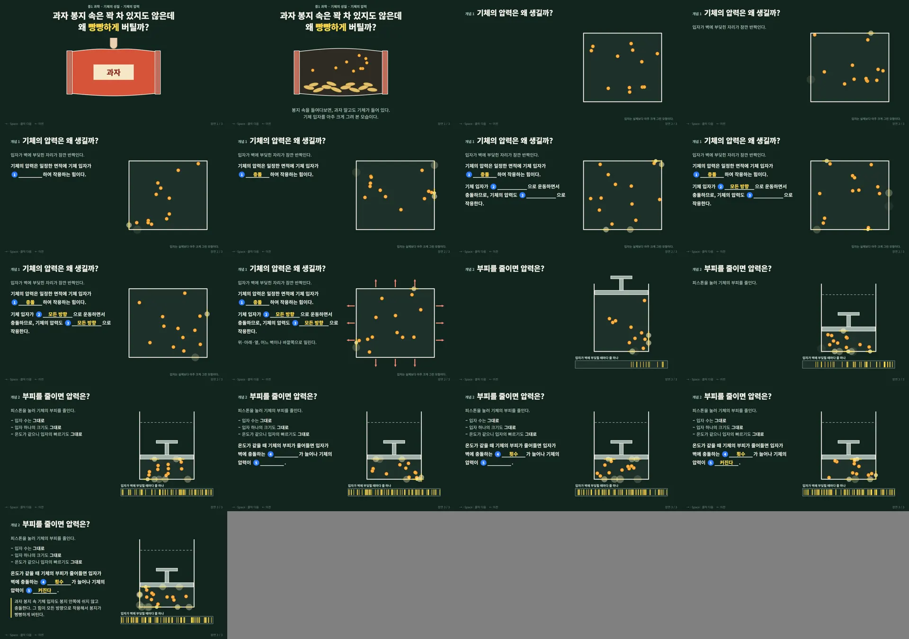

AI로 라이브 슬라이드 만들기
학습지 문장이나 교과서 몇 쪽을 주고, 전자칠판에 띄워 설명하며 넘기는 화면을 1~3장부터 만들어 보고 한 차시 전체로 넓히는 방법입니다. 프롬프트 하나로 시작해서 고치는 법, 한 차시로 만드는 법, 디자인 바꾸기, 과학 그림을 계산해서 그리게 하는 법, 나만의 스킬로 묶어 두는 법까지 차례로 적었습니다.
오늘 연수 순서 (11월 25일)
- 결과부터 보기10분. 기체의 압력 화면과 광도와 조도 화면을 넘겨 봅니다.
- 라이브 슬라이드-쌍방향 수업10분. 휴대폰으로 답을 보내고, 칠판에 모이는 것을 봅니다.
- 스킬을 넣어 강의 자료 만들기30분. 스킬 파일과 학습지를 함께 첨부해 3장을 만듭니다. 받을 파일과 보낼 글은 이 순서 바로 아래에 있습니다.
- 디자인 바꿔 보기15분. 같은 내용을 손글씨 노트판이나 디자인 서랍판으로 다시 만듭니다.
- 설명 글을 넣어 만들기20분. 내가 설명하는 순서를 글로 적어 넣고 화면을 만듭니다.
- BONUSAI가 화면을 만드는 동안 함께 봅니다. 끝에는 내려받기 모음을 안내합니다.
한 차시 전체 만들기(6절), 내 Supabase로 학생 답 받기와 GitHub에 올리기(9절)는 오늘 다루지 않습니다. 연수가 끝난 뒤 이 페이지를 보며 해 보실 수 있게 그대로 두었습니다.
꾸러미를 풀면 lecture-board.zip이 들어 있습니다. 이 파일은 다시 풀지 않습니다. AI 채팅에서 새 대화를 열고, lecture-board.zip과 학습지를 함께 첨부한 뒤 아래 글을 보냅니다.
AI가 zip을 열지 못하면 lecture-board.zip을 풀어, 그 안의 SKILL.md와 references 폴더의 「강의화면_프롬프트.txt」를 첨부합니다. Claude를 자주 쓰실 분은 스킬을 한 번 등록해 두면 다음부터 학습지만 첨부해도 됩니다. [Settings] → [Capabilities]에서 Code execution and file creation을 켜고, [Customize] → [Skills]에서 「+」, 「Create skill」, 「Upload a skill」을 차례로 눌러 lecture-board.zip을 올립니다. 무료 요금제에서도 됩니다.
목차
- 살아 있는 수업 자료그림이 단계마다 움직이고, 값을 바꾸면 결과가 달라지는 시뮬레이터가 들어 있습니다. 학습지 빈칸은 같은 번호로 열립니다.
- 학생과 바로 주고받기학생이 휴대폰으로 답을 보내면 칠판에 바로 모입니다. 고르기, 빈칸, 예측, 서술, 그래프 그리기 다섯 가지 질문을 넣을 수 있습니다.
- 여러 가지 디자인기본판, 손글씨 노트판, 디자인 서랍판 가운데 고를 수 있습니다. 같은 내용에 겉모습만 바꿔 다시 만들 수도 있습니다.
- 쓰던 수업 자료에서 시작교과서 쪽, 쓰시던 학습지, 설명 순서를 적은 메모를 AI에 주면 그 내용으로 만들어집니다. 선생님이 가르쳐 온 순서와 강조하는 점이 화면에 들어갑니다.
라이브 슬라이드는 제가 전자칠판에 띄워 두고 설명하며 넘기는 HTML 한 파일입니다. → 키를 누를 때마다 그림이 하나씩 움직이거나 빈칸 하나가 열리고, 학생은 종이 학습지의 같은 번호 칸에 받아 적습니다. PPT와 달리 그림이 실제로 움직여서, 기체 입자가 벽에 부딪히는 모습이나 전류가 도는 모습을 애니메이션 설정 없이 보여 줄 수 있습니다. 프롬프트와 스킬 안에서는 AI가 무엇을 만들지 알아듣게 「칠판 강의 화면」이라고 적었습니다.
제가 수업에 쓰는 한 차시 화면은 20장 안팎입니다. 이 글에서는 먼저 개념 하나를 1~3장으로 만듭니다. 3장이면 AI가 한 번에 끝까지 쓰고, 남은 시간에 두세 번 고쳐 볼 수 있기 때문입니다. 익숙해지면 6절처럼 한 차시 전체로 넓힙니다.
1결과부터 보기
아래는 제가 수업에 쓰는 중1 「기체의 압력」 화면입니다. 화면을 한 번 누른 뒤 → 키로 넘기고, ← 키로 되돌아갑니다.
같은 방법으로 중1·중2·중3·통합과학 교과서 쪽만 주고 만든 화면 24개를 예시 모음에 모아 두었습니다. 모두 선생님이 슬라이더나 단추로 값을 바꾸는 시뮬레이터가 한 장면 이상 들어 있습니다.


2준비물
꼭 있어야 하는 것
- AI 채팅 하나. Claude, ChatGPT, Gemini 가운데 쓰시는 것이면 됩니다. 결과 화면은 Claude의 아티팩트, Gemini의 캔버스 창에서 바로 봅니다. Gemini는 입력칸 아래 [Canvas]를 켜 둡니다. ChatGPT는 2026년 5월에 캔버스가 빠져서, 코드 상자의 미리 보기로 보거나 파일로 저장해 엽니다. 재료가 분명한 1~3장은 무료 요금제로도 만들어졌고, 시뮬레이터나 비유가 중요한 화면이나 한 차시 20장 안팎은 유료 요금제의 Opus·Fable 같은 모델이 낫습니다. 무료와 유료, 웹 채팅과 데스크톱 앱이 어떻게 다른지는 10절에 적었습니다.
- 컴퓨터와 크롬 브라우저. AI가 준 HTML 파일을 내려받아 더블클릭으로 열고, 넘겨 보며 점검합니다. 태블릿만으로는 파일을 저장하고 여는 일이 번거롭습니다.
- 내 수업 자료. 학습지, 교과서 쪽, 설명 대본 가운데 하나면 됩니다. 자료마다 준비하는 법은 4절에 적었습니다. 예시 모음의 24개는 교과서 쪽 그림만 주고 만들었습니다.
있으면 좋은 것
- 내 틀. 마음에 든 디자인 서랍 DESIGN.md와 내 규칙 메모(과목 용어, 색 약속, 쓰지 않을 말)입니다. 11절처럼 스킬로 묶어 두면 다음부터는 재료만 넣어도 됩니다.
- 보여 줄 기기. 전자칠판이나 TV에 연결한 노트북입니다. 넘기기 리모컨(프레젠터)이 있으면 편합니다. 화면 위에 판서하시려면 아이패드와 펜슬, 또는 전자칠판 손가락으로 씁니다.
- GitHub 계정(필요할 때만). 학생에게 링크로 나눠 주실 때, 유튜브를 칸 안에서 트실 때, 내 컴퓨터의 3D 파일을 쓰실 때만 필요합니다. 그 밖에는 12절처럼 파일로 열면 됩니다.
시간. 처음 3장은 30분에서 1시간을 잡습니다. 만든 뒤 한 장씩 넘기며 과학 내용이 틀린 곳, 글자가 겹친 곳, 관찰하기 전에 정답이 보이는 곳을 찾고, 고칠 점을 한 문장씩 적어 다시 보냅니다.
이 글에서 쓰는 프롬프트와 스킬은 아래 꾸러미에 모두 들어 있습니다. 프롬프트는 이 글에서 바로 복사하셔도 됩니다.
3첫 화면 만들기
먼저 제가 만든 예시 프롬프트를 그대로 넣어 봅니다. 중1 「기체의 압력」을 3장으로 만드는 프롬프트이고, 빈칸 ①~⑤의 학습지 문장과 정답이 들어 있습니다.
- 복사해서 보내기위 상자의 [복사]를 누르고, AI 채팅 입력칸에 붙여 넣어 보냅니다. 3장짜리도 모델에 따라 2~6분이 걸립니다.
- 결과 창에서 열기Claude 아티팩트나 Gemini 캔버스, ChatGPT 코드 상자의 미리 보기에서 봅니다. 결과 창이 없으면 코드를 복사해 메모장에 붙이고 「강의.html」로 저장한 뒤 더블클릭합니다.
- 끝까지 넘겨 보기화면을 한 번 누르고 → 키로 끝까지 넘긴 다음, ← 키로 처음까지 돌아와 봅니다.
결과가 나오지 않을 때 쓰는 예시 코드
위 프롬프트를 넣어 Claude Sonnet이 만든 3장짜리 결과입니다. [복사]를 눌러 메모장에 붙이고 「강의.html」로 저장한 뒤 더블클릭하면 같은 화면이 열립니다. 바로 열어 보기
코드가 중간에 끊겼습니다
한 번에 쓰는 길이가 짧은 모델은 끊길 수 있습니다. 같은 대화에 「이어서 써 줘」를 보내 끊긴 곳부터 쓰게 합니다.
→ 키를 눌러도 넘어가지 않습니다
커서가 채팅 입력칸에 있으면 키가 화면으로 가지 않습니다. 화면을 한 번 누른 뒤 → 키를 누릅니다.
메모장으로 저장한 파일이 글자로만 보입니다
이름이 「강의.html.txt」로 저장된 경우입니다. 저장할 때 파일 형식을 「모든 파일」로 바꾸고 이름을 「강의.html」로 적습니다.
프롬프트는 어떤 칸으로 되어 있나요
글자 크기는 처음에 숫자로만 적었습니다. 그랬더니 같은 프롬프트인데도 결과마다 제목이 60px, 64px, 68px, 72px로 달랐습니다. 그래서 그대로 넣을 CSS 한 줄을 주었고, 그다음 시험에서는 네 결과 모두 그 줄을 글자 그대로 넣었습니다.
「그림으로 먼저 보여 준 뒤 빈칸을 연다」는 줄은 Haiku가 피스톤을 누르기도 전에 정답부터 연 것을 보고 더했습니다.
4내 자료로 만들기
이제 내 수업 자료로 만듭니다. 학습지, 교과서 쪽, 설명 대본처럼 가지고 있는 자료를 아래 프롬프트와 함께 보내면, AI가 자료를 읽고 재료 칸을 채워 화면을 만듭니다. 빈칸이 있는 화면도, 빈칸 없이 설명만 하는 화면도 같은 프롬프트로 만듭니다.
- 디자인 고르고 복사하기위에서 디자인을 고르면 그 판의 프롬프트로 바뀝니다. 디자인 서랍판이면 DESIGN.md도 함께 첨부합니다.
- 자료 넣기파일은 입력칸의 첨부 단추로 올리고, 대본이나 스크립트 같은 글은 프롬프트 맨 아래 「내 자료」 줄 밑에 붙여 넣습니다. 빈칸 없이 설명만 하는 화면이면 프롬프트의 「■ 빈칸: 있게」를 「없이」로 고칩니다.
- 계획 확인하기AI가 장면 3개 계획과 빈칸 표(빈칸이 없으면 핵심 문장 목록)를 먼저 보여 주고 멈춥니다. 빈칸 정답과, 자료에 없어 짐작으로 채웠다고 적힌 곳을 보고 고칠 점을 말합니다.
- 「좋아」라고 보내기그때 화면을 만듭니다. 교과서 쪽이나 대본으로 빈칸을 새로 만들었으면 학생용 빈칸 학습지 글도 함께 받습니다.
어떤 자료를 넣을 수 있나요
| 자료 | 준비하는 법 | 나오는 화면 |
|---|---|---|
| 학습지 빈칸이 있는 개념정리 활동지 | 한글(hwp)은 PDF로 저장하거나 사진으로 찍어 첨부합니다. 여러 차시가 한 파일이면 아래 PDF 만능 도구로 그 차시 쪽만 뽑습니다. | 학습지의 빈칸 번호와 정답 그대로 |
| 교과서·지도서 쪽 | 쓸 2~5쪽만 넣습니다. 교과서 PDF 전체는 수백 MB라 채팅에 올라가지 않으니, PDF 만능 도구로 쪽만 뽑거나 화면을 캡처합니다. | 교과서 낱말로 만든 빈칸 + 학생용 빈칸 학습지 글 |
| 내가 쓴 설명 대본 | 설명하는 순서대로, 수업에서 쓰는 비유와 학생에게 던질 질문까지 적습니다. | 빈칸 있게·없이 모두 |
| 강의를 받아쓴 글 | Windows 키 + H로 평소 수업하듯 말하면 글로 받아써집니다. | 빈칸 있게·없이 모두 |
| 유튜브 영상 스크립트 | 영상의 「스크립트 표시」에서 대본을 복사합니다. | 빈칸 있게·없이 모두 |
| 수업 흐름 메모 | 「도입 질문 → 실험 영상 → 핵심 정리」처럼 순서만 적습니다. | 빈칸 있게·없이 모두. 메모에 없는 설명을 채운 곳은 (추측)으로 표시 |
교과서 쪽은 예시 모음 24개를 만들며, 학습지와 대본은 11월 8일 시험에서 써 봤습니다. 받아쓴 강의, 영상 스크립트, 흐름 메모는 아직 같은 조건으로 시험하지 못했습니다.
교과서·학습지 PDF에서 쓸 쪽만 뽑기
PDF 만능 도구에서 교과서나 학습지 PDF를 열고, [분할]이나 [추출]로 쓸 쪽만 따로 받습니다. 파일은 브라우저 안에서만 처리되고 인터넷에 올라가지 않습니다. 받은 PDF를 AI 입력칸에 첨부합니다.
한글(hwp) 학습지는 한글에서 [파일] → [PDF로 저장하기]로 PDF를 만든 뒤 같은 방법으로 넣습니다.
강의를 받아써서 넣기 (Windows 키 + H)
메모장을 열고 Windows 키 + H를 누르면 음성 입력 창이 뜹니다. 마이크가 켜지면 평소 수업하듯 설명하고, 끝나면 다시 Windows 키 + H로 끕니다. 받아써진 글을 복사해 프롬프트의 「내 자료」 줄 밑에 붙여 넣습니다.
휴대폰으로 수업을 녹음한 뒤 클로바노트 같은 받아쓰기 앱으로 글을 뽑아도 됩니다. 「어」「자」 같은 군말은 AI가 정리하고, 과학 용어가 잘못 받아써진 것 같은 곳은 고치지 말고 계획에서 묻도록 프롬프트에 적어 두었습니다.
유튜브 영상 스크립트 넣기
영상 아래 설명란을 펼쳐 「스크립트 표시」를 누르면 오른쪽에 대본이 나옵니다. 대본 창의 ⋮ 메뉴에서 시간 표시를 끄고, 대본 전체를 끌어 복사해 「내 자료」 줄 밑에 붙여 넣습니다.
내가 올린 영상이면 그대로 써도 됩니다. 남이 만든 영상은 문장을 그대로 옮기지 않고 다시 쓰도록 프롬프트에 적어 두었고, 화면 아래에 출처 한 줄을 남깁니다.
대본이나 흐름 메모를 직접 쓰기
대본은 말하듯 적으면 됩니다. 예) 「먼저 같은 전구를 가까이와 멀리 두고 밝기를 비교해 보인다. 왜 멀리 있는 전구가 어두울까 묻는다. 빛이 퍼지는 넓이를 우산에 비유한다.」
흐름 메모는 순서만 적습니다. 메모만 주면 설명은 AI가 채우므로, 계획에서 (추측)으로 표시된 곳을 꼭 확인합니다.
제가 만든 「광도와 조도로 알아보는 밝기와 거리」는 학습지 없이 설명만 하는 화면입니다. 이런 화면은 프롬프트의 「빈칸: 있게」를 「없이」로 바꾸고, 대본이나 받아쓴 강의를 넣습니다. 빈칸 대신 장면마다 핵심 문장 한두 개가 나오고, 가장 중요한 낱말 하나만 강조색으로 칠합니다.
칸을 직접 채우고 싶을 때
빈칸과 그림을 내가 직접 정하고 싶으면 아래 칸을 채웁니다. 칸을 채우면 고른 디자인의 프롬프트가 바로 완성되고, 적은 내용은 이 기기에만 저장됩니다.
장면은 3장, 빈칸은 3~5개로 잡습니다. 학습지 번호는 실제 학습지 번호를 그대로 적습니다. 그래야 화면에 열린 빈칸을 학생이 같은 칸에 받아 적습니다.
기체의 압력에서 「부피를 줄여도 입자 수와 크기, 빠르기는 그대로」와 「압력은 아래로만이 아니라 모든 벽에 작용」을 적어 두었더니, 네 모델이 모두 이 규칙을 지켰습니다. 그래서 저는 내 개념에서 학생들이 자주 틀리는 그림과 아직 배우지 않은 낱말을 이 칸에 먼저 적습니다. 자료만 넣는 판에서도 「내 자료」 위의 「주의할 점」 줄에 같은 내용을 적을 수 있습니다.
5점검하고 고치기
처음 나온 화면을 그대로 쓰는 일은 드뭅니다. 저는 끝까지 넘겨 보며 아래 여덟 가지를 확인하고, 걸리는 곳을 하나씩 고칩니다.
- 코드가 끝까지 나와서 마지막 장면까지 넘어간다
- → 와 ← 로 넘어가고 처음까지 되돌아온다
- → 를 빠르게 연타해도 화면이 깨지지 않는다
- 빈칸 번호와 정답이 학습지와 같다
- 빈칸이 열리기 전에 정답이 그림 이름표나 제목에 먼저 보이지 않는다
- 그림이 과학적으로 맞다
- 아직 배우지 않은 낱말이 없다
- 글자가 겹치거나 잘린 곳이 없다
기체의 압력이라면 부피를 줄이기 전과 후에 입자 개수를 세어 봅니다. 그림이 맞는지는 화면만 봐서는 지나치기 쉬워서, 「주의할 점」에 적은 것을 한 줄씩 짚어 가며 봅니다. 종이로 쓰실 분을 위해 같은 내용을 비교 점검표로 넣어 두었습니다.
고칠 때는 한 장면씩
한꺼번에 여러 곳을 고쳐 달라고 하면 AI가 파일 전체를 다시 쓰면서 잘 되던 장면까지 바뀌는 일이 생깁니다. 그래서 저는 장면 번호를 적고, 「다른 장면은 그대로 둬」를 붙여 하나씩 고칩니다.
6한 차시로 만들기
3장으로 익숙해지면 한 차시 전체를 만듭니다. 이때는 채울 칸이 없는 프롬프트를 씁니다. 교과서 쪽, 쓰시던 학습지, 내 설명 방식 가운데 있는 것만 첨부하면, 모자란 것은 AI가 묻습니다.
- 붙여 넣고 첨부하기위 프롬프트를 통째로 붙여 넣고, 교과서에서 이번 차시 쪽(사진이나 PDF), 쓰시던 학습지, 내 설명 방식(수업을 받아쓴 글, 대본, 또는 「이렇게 설명한다」 몇 줄) 가운데 있는 것을 첨부해 보냅니다.
- 물음에 답하기AI가 자료를 짧게 요약하고, 자료로 알 수 없는 것만 많아야 6개 묻습니다. 질문마다 AI가 고른 답이 붙어 있어서, 떠오르지 않으면 「추천대로」라고 보냅니다. 추천 답 가운데 숫자와 과학 내용은 한 번 읽고 보냅니다.
- 장면 목록 확인하기한 차시 장면 목록과 전체 빈칸 표가 나옵니다. 고칠 곳이 없으면 「좋아」라고 보냅니다.
- 한 파일로 받기「좋아」라고 보내면 한 차시 화면이 HTML 파일 하나로 나옵니다. 코드가 중간에 끊기면 같은 대화에 「이어서 써 줘」라고 보냅니다.
- 넘겨 보고 고치기끝까지 넘겨 보고, 고칠 점은 장면 번호와 함께 한 문장으로 보냅니다.
시험해 본 결과
11월 25일에 파일 하나로 받는 지금 판을 같은 자료로 시험했습니다. Claude Sonnet이 웹 채팅처럼 만들게 했고, 제가 보낸 말은 「5번만요 … 나머지는 추천대로」와 「좋아」 둘입니다. 15장이 파일 하나(26KB)로 8분 10초 만에 나왔고, 코드는 중간에 끊기지 않았습니다. 끝까지 넘어갔고(91단계) 콘솔 오류가 없었으며, 빈칸 27개의 번호와 정답이 학습지 그대로였습니다. 그림이 화면에 비해 작은 장면이 있었고, 추 시뮬레이터에 힘 화살표는 없었습니다.
파일 하나로 받은 결과 열어 보기 (고치지 않은 AI 결과 그대로) ↗
11월 27일에는 넘기는 코드를 AI가 쓰지 않고 공통 뼈대에 맡기는 지금 프롬프트로 같은 자료를 다시 넣었습니다. 보낸 말은 「4번만요 … 나머지는 추천대로」와 「좋아」 둘이고, 16장이 파일 하나(34KB)로 8분 12초 만에 나왔습니다. 끝까지 넘어갔고(88단계) 빈칸 27개의 번호와 정답이 학습지 그대로였습니다. 이 화면에는 그림을 넣고 저장하는 기능이 붙습니다.
지금 프롬프트로 받은 결과 열어 보기 (고치지 않은 AI 결과 그대로) ↗
아래는 그 전 판의 기록입니다.
11월 20일에 중1 「기체의 압력과 부피 사이의 관계」로 시험했습니다. 교과서 206~209쪽 그림, 제 학습지(빈칸 27개), 설명 순서를 적은 메모 일곱 줄을 첨부했고, Claude Sonnet이 웹 채팅처럼 만들게 했습니다. 그때는 장면 4~6장씩 묶음으로 나눠 받는 판이었고, 제가 보낸 말은 아래가 전부입니다.
| 제가 보낸 말 | AI가 한 일 | 걸린 시간 |
|---|---|---|
| 프롬프트와 첨부 파일 | 자료를 요약하고 질문 6개를 물었습니다. 교과서 표와 학습지 표의 숫자가 다른 것을 찾아 학습지 숫자를 쓰겠다고 했습니다. | 49초 |
| 「5번만요. 추가 없을 때 60 mL, 1개 올리면 30, 2개면 20이에요. 추 1개가 바깥 공기가 누르는 힘과 같은 크기예요. 나머지는 추천대로.」 | 장면 16개 목록, 빈칸 ①~㉗ 표, 짐작으로 채운 곳 세 군데 | 1분 53초 |
| 「좋아」 | 묶음 1(장면 1~5) | 6분 17초 |
| 「다음」 | 묶음 2(장면 6~10, 추를 올리고 내리는 시뮬레이터) | 3분 1초 |
| 「장면 6에 기체가 피스톤을 위로 미는 힘 화살표도 보여 주세요. 두 화살표 길이가 같아지면 피스톤이 멈추게요. 그리고 추를 올린 직후 입자가 피스톤 밑에 몰려 보여요. 고르게 퍼지게 해 주세요.」 | 장면 6만 고친 묶음 2 | 1분 52초 |
| 「다음」 | 묶음 3(장면 11~16)과 수업 전에 확인할 곳 다섯 가지 | 3분 15초 |




결과 열어 보기 (강의_1.html부터, 고치지 않은 AI 결과 그대로) ↗
세 파일 모두 끝까지 넘어갔고 콘솔 오류가 없었습니다. 빈칸 27개는 학습지 번호와 정답 그대로였고, 묶음 1의 디자인 코드가 묶음 2와 3에 한 줄도 빠지지 않고 들어갔습니다. 파일 사이 넘기기도 됐습니다. 다만 그림이 화면에 비해 작았고(가로 650px 남짓), 장면 6의 힘 화살표는 제가 고칠 점을 보낸 뒤에야 생겼습니다.
5번 질문에서 AI는 「추 1개 60 mL, 2개 30 mL, 3개 20 mL」를 추천 답으로 달았습니다. 바깥 공기가 누르는 힘을 빼고 계산한 값이라, 「추천대로」라고만 보냈으면 틀린 시뮬레이터가 나왔을 것입니다. 그래서 프롬프트에 「자료에 없는 과학 사실(숫자, 조건, 원리)은 추천 답 없이 묻는다」는 줄을 더했습니다. 이 줄을 넣은 판은 아직 다시 시험하지 못했습니다.
Claude Sonnet으로 한 번 시험한 결과입니다. ChatGPT와 Gemini, 무료 요금제 모델로는 아직 시험하지 못했습니다.
7디자인 바꾸기
프롬프트에서 디자인 칸만 바꾸면 넘기기·빈칸·순서는 그대로 두고 겉모습만 바뀝니다. 세 가지 판을 만들어 두었고, 4의 재료 칸에서 디자인을 고르면 내 재료로 된 프롬프트도 같이 바뀝니다.
손글씨 노트판
모눈종이 위에 손글씨 글꼴로 한 줄씩 써지고, 형광펜이 그어지는 판입니다. 제가 유튜브 개념 강의에 쓰는 손글씨 단권화 노트의 모습을 3장판으로 옮겼습니다.
글꼴(나눔손글씨 바른히피)을 인터넷에서 불러오므로, 이 판으로 만든 화면은 인터넷이 연결되어 있어야 손글씨로 보입니다.
디자인 서랍판
DESIGN.md는 한 웹사이트의 색, 글꼴 크기, 간격 같은 규칙을 적은 글입니다. 디자인 서랍에서 하나를 받아 프롬프트와 함께 보냅니다.
- DESIGN.md 받기디자인 서랍에서 마음에 드는 카드의 [DESIGN.md 받기]를 누릅니다.
- 첨부하고 보내기입력칸의 첨부 단추(＋ 또는 클립)로 파일을 올리고, 아래 프롬프트를 붙여 넣어 보냅니다.
이 프롬프트는 DESIGN.md의 색과 모양은 따르되, 글자 크기와 넘기기·빈칸 규칙은 프롬프트 쪽을 따르게 적어 두었습니다. DESIGN.md에 적힌 웹 페이지 글자 크기는 교실 맨 뒤에서 읽기에 작기 때문입니다.
같은 규칙, 다른 겉모습


11월 13일에 Sonnet 하나로 네 판을 만들었습니다. 넷 모두 받은 글자 크기 CSS를 그대로 넣었고, 넘기기와 빈칸 순서도 같았습니다. 손글씨판은 처음에 상자 그리기, 입자 넣기, 이름표 붙이기를 단계마다 따로 나눠서 단계가 20개까지 늘었습니다. 그래서 「그림은 처음부터 보이고 움직인다」는 줄을 더해 다시 만들었고, 17단계로 줄었습니다.
8과학 그림과 시뮬레이터
그림은 SVG로, 계산해서 그리게 하기
SVG는 선의 시작점과 끝점, 호의 각도를 숫자로 적는 그림입니다. 그래서 AI가 식으로 계산한 값을 그대로 좌표에 넣을 수 있고, 라이브 슬라이드를 만들며 써 보니 과학 그림은 SVG로 그리게 할 때 가장 정확했습니다. 아래 세 그림도 슬라이더를 움직일 때마다 굴절, 렌즈, 남중 고도의 식으로 다시 계산해서 그립니다.
그림 칸에 「물체가 2F 밖에 있을 때 볼록 렌즈의 상, 광선 세 개」, 식 칸에 「상 거리 = 물체 거리 × 초점 거리 ÷ (물체 거리 − 초점 거리)」를 적습니다.
그림 칸에 「북위 37.5°에서 하지·춘분·추분·동지의 남중 고도」, 식 칸에 「남중 고도 = 90° − 위도 + 적위(하지 23.5°, 동지 −23.5°)」를 적습니다.
그림을 부탁할 때 저는 「눈대중으로 그리지 말고 계산해서 좌표로 넣는다」와 「쓴 식은 코드 주석으로 남긴다」를 꼭 넣습니다. 쓸 식과 값(굴절률, 초점 거리, 위도)을 같이 주면 AI가 값을 지어내지 않습니다. 다 그린 뒤에는 AI가 보고한 각도·위치가 식으로 계산한 값과 같은지 봅니다.
이미지를 만들어 주는 AI의 그림은 쓰지 않습니다. 보기에는 그럴듯해도 각도나 화살표 방향이 틀린 그림이 섞여 나올 수 있고, 학생은 화면에 본 모습 그대로 기억하기 때문입니다.
시뮬레이터 넣기
예시 모음의 24개는 모두 장면 하나 이상에 선생님이 조작하는 시뮬레이터를 넣게 했습니다. 프롬프트 끝에 아래 줄을 더하고 괄호 안을 내 개념으로 바꿉니다.
예시를 만들며 고칠 일이 생긴 곳은 대개 시뮬레이터의 과학이었습니다. 중2 「호흡 운동」 예시는 처음에 숨을 다 쉰 뒤에도 폐의 압력이 낮은 채로 남아 있고 공기 화살표도 그대로였습니다. 실제로는 움직임이 멈추면 대기압과 같아지고 흐름도 멈추어서, 그렇게 한 번 고쳤습니다. 그래서 저는 시뮬레이터가 멈춘 뒤의 모습까지 확인합니다.
이미 있는 실험실·영상·3D 모형 붙이기
시뮬레이터를 새로 그리게 하기 어려운 내용은 이미 검증된 자료의 주소를 붙입니다. 4의 (선택) 칸에 주소를 넣으면 AI가 장면 안에 칸을 만들어 줍니다.
| 과목 | 자료 | |
|---|---|---|
| 화학 | PhET 기체의 성질 | |
| 물리 | PhET 회로 만들기 | |
| 물리 | PhET 빛의 굴절 | |
| 생물 | PhET 자연 선택 | |
| 지구과학 | PhET 중력과 궤도 | |
| 3D 모형 | NASA 퍼서비어런스 탐사 로버(GLB) |
과목별 주소는 가져다 쓸 재료 목록에 PhET 16개, GeoGebra·Desmos, 3D 모형 출처까지 모아 두었습니다. PhET를 넣은 장면 아래에는 출처 한 줄(PhET Interactive Simulations, University of Colorado Boulder)을 붙입니다.
만든 HTML을 더블클릭해 열면 유튜브는 칸 안에서 재생되지 않고 「오류 153」이 뜹니다. 칸 아래 「새 창에서 열기」 단추로 유튜브에서 엽니다.
내 사진과 PPT 그림 넣기
AI는 사진을 화면에 넣어 주지 못합니다. 실험 사진, 교과서 그림, 쓰던 PPT의 그림은 만든 화면을 열어서 직접 넣습니다. 넣은 그림은 화면 파일 안에 함께 저장됩니다.
- 파일로 저장해 열기AI가 만든 화면을 「강의.html」로 저장하고 더블클릭해 엽니다. 오른쪽 위에 [편집] 단추가 보입니다. AI 채팅의 미리 보기 창에서는 이 단추가 보이지 않을 수 있습니다.
- 그림 넣기[편집]을 누르고, ← → 키로 그림을 넣을 슬라이드로 갑니다. 그림 파일을 화면에 끌어다 놓거나, 복사한 그림을 Ctrl+V로 붙여 넣습니다.
- PPT에서 한꺼번에 꺼내기쓰던 PPT 파일(.pptx)을 화면에 끌어다 놓으면 그 안의 그림이 오른쪽에 목록으로 뜹니다. 그림을 누르면 지금 슬라이드에 들어갑니다.
- 옮기고 크기 맞추기그림을 끌어서 옮기고, 오른쪽 아래 파란 동그라미를 끌어 크기를 바꿉니다.
- 나타나는 때 정하기그림을 누르고 위쪽 줄의 [−] [+]로 「2단계부터 보임」처럼 정합니다. 그 단계에서 → 키를 누를 때 그림이 나타납니다.
- 저장하기[저장]을 누르면 그림이 들어간 HTML 파일 하나가 내려받아집니다. 이 파일은 인터넷이 없어도 열립니다.
[편집] 단추가 보이지 않습니다
편집 기능은 화면을 처음 열 때 인터넷에서 불러옵니다. 인터넷이 연결된 곳에서 파일을 열어 주세요. 한 번 [저장]한 파일에는 편집 기능이 들어 있어서 그 뒤로는 인터넷이 없어도 됩니다. 11월 27일보다 앞서 받은 프롬프트로 만든 화면에는 이 기능이 없습니다.
PPT를 놓았는데 목록에 없는 그림이 있습니다
오래된 PPT에 든 일부 그림 형식은 꺼내지 못합니다. 파워포인트에서 그 그림을 눌러 복사하고, 편집 화면에서 Ctrl+V로 붙여 넣습니다.
그림 자리가 점선으로 보입니다
AI가 사진이 필요하다고 본 곳에 만들어 둔 자리입니다. 그 슬라이드에 그림을 넣으면 그 자리에 맞춰 들어갑니다. 비워 두면 수업 화면에서는 보이지 않습니다.
다른 선생님께 화면을 나누려 합니다
교과서 그림처럼 나눌 수 없는 그림을 넣었으면 [그림 빼고 저장]을 누릅니다. 그림은 빠지고 자리와 이름만 남은 파일이 나옵니다. 받은 선생님은 그 자리에 자기 그림을 넣습니다.
9학생 답 모으기
라이브 슬라이드에 한 줄을 더하면, 학생이 휴대폰으로 예측과 답을 보내고 선생님은 칠판에서 반 전체의 답을 모아 봅니다. 학생 휴대폰 위쪽에는 선생님 화면이 작게 같이 떠서 넘기는 대로 따라오고, 선생님은 지금 몇 명이 보고 있는지와 나간 학생을 봅니다. 학생은 로그인하지 않고, 이름도 받지 않습니다.


- 방 열기시연 화면처럼 학생 참여를 넣은 화면에서 왼쪽 아래 「학생 답」 → 「시작」을 누릅니다. 「번호 받기」는 세특 기록처럼 누가 쓴 답인지, 누가 나갔는지 알아야 할 때만 켭니다.
- 학생 들어오기화면에 뜬 QR을 휴대폰 카메라로 찍거나, 학생 페이지 주소에 6자리 코드를 넣습니다. 휴대폰 위쪽에 선생님 화면이 뜨고, 선생님이 → 키로 넘기면 2초 안팎으로 따라옵니다. 손으로 그은 판서와 시뮬레이터를 움직인 결과는 따라가지 않아 칠판에서 봐야 합니다. 학생은 「접기」로 이 칸을 닫을 수 있습니다.
- 학생 답변 수집→ 키로 넘기다 질문 단계에 오면 칠판에 「휴대폰으로 답하기 · 코드 · 몇 명」 알약이 뜨고, 학생 휴대폰에 그 질문이 나옵니다.
- 답 보기알약이나 「학생 답」 단추를 누르면 오른쪽에 답이 모입니다. 「답 가리기」로 흐리게 두고 먼저 볼 수 있고, 서술 카드는 하나를 크게 띄우거나 가립니다. 패널을 눌러도 장면은 넘어가지 않습니다.
- 실시간 참여 학생 확인「학생 답」 단추에 「보는 중 25 · 나감 2」처럼 뜹니다. 다른 앱으로 넘어가거나 화면을 끄거나 창을 닫은 휴대폰을 「나감」으로 셉니다. 패널의 「나감 2명 · 보기」를 누르면 나간 학생 번호와 나간 시각이 펼쳐집니다. 번호는 「번호 받기」를 켰을 때만 나오고, 끈 방에서는 「번호 없는 기기 2대」로 나옵니다. 칠판에 띄우지 않고 보려면 선생님 휴대폰이나 노트북으로 「모아보기」를 열어 둡니다. 모아보기에도 같은 목록이 5초마다 새로 뜹니다.
- 끝낸 뒤「모아보기」에서 질문별 표와 CSV를 받고, 「방 닫기」로 서버의 답을 지웁니다.
질문 여섯 가지
| 종류 | 언제 묻나 | 칠판에 보이는 것 |
|---|---|---|
| 빈칸 미리 맞히기 | 빈칸을 열기 바로 전 단계 | 같은 낱말끼리 묶은 막대(띄어쓰기가 달라도 한 묶음)와 「정답 표시」 |
| 시뮬레이터 예측 | 시뮬레이터를 움직이기 바로 전 단계 | 학생 예측이 점으로 찍히고, 「실제 값과 견주기」를 누르면 시뮬레이터의 값이 빨간 선으로 겹침 |
| 그래프 예측 | 그래프나 시뮬레이터로 관계를 보여 주기 바로 전 단계 | 학생이 손가락으로 그린 그래프가 한 축 위에 겹쳐 그려짐. 다섯 명이 넘으면 반의 가운데 선이 굵게 나오고, 「실제 그래프와 견주기」를 누르면 실제 그래프가 빨간 점선으로 겹침 |
| 고르기 | 아무 단계 | 보기마다 막대와 「정답 표시」 |
| 짧은 서술 | 관찰한 뒤 「왜 그럴까?」를 묻는 단계 | 이름 없는 카드 |
| 질문 보내기 | 수업 내내 열려 있음 | 질문함 카드 |
빈칸 미리 맞히기와 시뮬레이터 예측은 이 라이브 슬라이드의 「그림으로 먼저 보여 준 뒤 빈칸을 연다」 흐름에 학생 예측을 끼운 것입니다. 반 전체가 쓴 낱말이나 예측값을 함께 본 다음 정답을 열거나 시뮬레이터를 움직입니다.
그래프 예측은 빈칸이 없는 설명 화면에도 붙입니다. 반 학생들이 그린 선이 한 그래프에 겹쳐 나오므로, 「온도를 올려도 부피는 그대로」처럼 다르게 생각한 학생이 몇 명인지 바로 보입니다. 모아보기에는 학생마다 그린 그래프가 작은 그림으로 남고, CSV에는 원래 단위의 값 41개가 들어갑니다.


내 Supabase 준비하기
처음에는 아무 설정 없이 써 볼 수 있습니다. 그때는 학생 답이 제 서버에 잠깐 담깁니다. 수업에 계속 쓰실 때는 아래 순서로 자기 Supabase를 만들어 거기에 모읍니다. Supabase는 데이터를 담아 두는 서비스이고, 무료 요금제로 프로젝트를 만들 수 있습니다.
- 프로젝트 만들기supabase.com에 가입하고 [New project]를 누릅니다. 이름과 데이터베이스 비밀번호를 정하고, 지역은 Seoul을 고릅니다. 만들어지는 데 1~2분이 걸립니다.
- 설치 SQL 돌리기아래 설치 SQL의 [복사]를 누르고, Supabase 왼쪽 메뉴의 [SQL Editor]에 붙여 넣은 뒤 [Run]을 누릅니다. 결과에 「설치 끝」 한 줄이 나오면 됩니다. 이 SQL에는 주소나 키를 넣는 곳이 없습니다. 내 프로젝트 안에서 돌리는 것이라 고치지 않고 그대로 붙여 넣습니다.
- 주소와 키 복사하기프로젝트 화면 위쪽의 [Connect]를 누르면 Project URL과 Publishable key가 보입니다. 주소는 https://(영문과 숫자).supabase.co 모양이고, 키는 sb_publishable_ 로 시작합니다. 왼쪽 아래 [Settings]의 [API Keys]에서도 같은 키를 볼 수 있습니다.
- 화면 파일에 주소와 키 넣기주소와 키가 들어가는 곳은 화면 파일입니다. 아래 「내 화면에 넣을 두 줄」의 첫 줄에서 url 뒤 따옴표 안에 Project URL을, key 뒤 따옴표 안에 Publishable key를 넣습니다. 아래 칸에 두 값을 붙여 넣으면 채워진 두 줄이 만들어집니다. 이 두 줄을 AI에게 함께 주거나, 화면 파일의 </body> 바로 앞에 직접 넣습니다.
Publishable key를 화면 파일에 적어도 되나요
Publishable key는 웹 페이지에 넣어 쓰도록 만든 공개 키입니다. 설치 SQL이 표를 직접 읽고 쓰는 것을 막아 두어서, 이 키로는 방 열기와 답 보내기처럼 정해 둔 일만 할 수 있습니다. AI 채팅에 보내도 됩니다. Secret key(sb_secret_ 로 시작)와 데이터베이스 비밀번호는 화면에 넣지 않고, 채팅에도 보내지 않습니다.
eyJ로 시작하는 긴 키(anon)만 보입니다
예전 방식의 키이고, 이 키를 넣어도 됩니다. Supabase는 anon 키를 2026년 말까지 쓰고 그 뒤에는 Publishable key로 바꾸도록 안내하고 있습니다. [Settings]의 [API Keys]에서 Publishable key를 새로 만들 수 있습니다. service_role 키는 쓰지 않습니다.
오랜만에 열었더니 답이 모이지 않습니다
Supabase 안내에 따르면 무료 요금제 프로젝트는 일주일쯤 쓰지 않으면 멈춥니다. Supabase에 들어가 프로젝트를 다시 켜면 됩니다. 수업 전날 한 번 열어 봅니다.
학생은 어떻게 들어오나요
「학생 답」 단추를 누르면 뜨는 QR을 휴대폰 카메라로 찍습니다. QR 주소에 선생님 Supabase 주소와 공개 키가 함께 들어 있어서, 학생 페이지가 그 서버로 답을 보냅니다.
실습: 학생 답 받는 화면을 내 주소로 올리기
준비해 둔 실습 화면에 내 Supabase 주소와 키를 넣어 받고, GitHub에 올려 내 주소로 엽니다. 실습 화면은 중1 「기체의 온도와 부피 관계」 3장이고, 질문 다섯 가지가 들어 있습니다.
- Supabase 준비하기위 「내 Supabase 준비하기」의 1~3을 합니다. 주소와 키를 위 칸에 붙여 넣어 둡니다.
- 실습 파일 받기아래 [실습 파일 받기]를 누르면 내 주소와 키가 들어간 index.html이 내려받아집니다.
- GitHub 저장소 만들기github.com에 가입하고, 오른쪽 위 [+]에서 [New repository]를 누릅니다. 이름을 영어로 적고(예: live-test), Public을 고른 뒤 [Create repository]를 누릅니다.
- 파일 올리기새 저장소 화면의 「uploading an existing file」을 누르고, 받은 index.html을 끌어다 놓은 뒤 [Commit changes]를 누릅니다.
- 주소 켜기저장소의 [Settings]에서 왼쪽 [Pages]를 열고, Branch를 main으로 고른 뒤 [Save]를 누릅니다. 1~2분 뒤 같은 자리에 https://(내 아이디).github.io/(저장소 이름)/ 주소가 나옵니다.
- 답 받아 보기그 주소를 열어 「학생 답」 단추를 누르고 [시작]을 누릅니다. QR을 휴대폰으로 찍어 들어온 뒤, 화면을 → 키로 넘기며 답을 보내 봅니다.
주소와 Publishable key를 한 번 찾아 두면, 다음에 AI로 화면이나 웹앱을 만들 때 「내 Supabase 주소는 …, Publishable key는 … 입니다」라고 채팅에 함께 보냅니다. AI가 그 값을 코드에 넣어 줍니다. 두 값은 메모장에 적어 두고 씁니다.
내 화면에 넣기
새로 만들 때는 프롬프트의 「■ (선택) 학생 참여: 안 넣음」을 「넣음」으로 바꿔 보냅니다. 내 Supabase에 모으려면 위에서 만든 두 줄도 함께 붙여 보냅니다. 4의 「칸을 직접 채우고 싶을 때」에서는 (선택) 칸의 「학생 참여」를 체크합니다. AI가 질문 자리를 2~4개 넣고, 다 쓴 뒤 질문 표를 붙입니다.
이미 만든 화면에는 그 화면 파일을 첨부하고 아래 프롬프트를 보냅니다.
직접 넣을 때 쓰는 코드
질문 자리는 그 화면이 다른 글과 그림을 단계마다 보이고 숨기는 방법 그대로 보이고 숨게 합니다. 종류는 choice(고르기, data-choices="보기1|보기2"), predict(예측, data-unit, data-actual-from="#값을 보여 주는 요소"), blank(빈칸 미리 맞히기), text(짧은 서술), sketch(그래프 예측, data-x·data-xmin·data-xmax·data-y·data-ymin·data-ymax로 축을 정하고 data-actual="0:46.6|100:63.7"처럼 실제 그래프의 점을 적음)입니다. 선생님이 방을 열기 전에는 이 자리가 비어 있어서 화면에 아무것도 보이지 않습니다.
이름은 받지 않습니다. 번호는 「번호 받기」를 켰을 때만 받습니다. 답 옆의 번호는 모아보기에서만 보이고, 나간 학생 번호는 패널에서 「보기」를 눌렀을 때만 펼쳐집니다. 칠판에 띄운 채 누르면 반 전체가 보게 되니 조심합니다. 답과 「보는 중」 신호(기기 표시, 번호, 마지막 신호 시각)는 서버에 담기고(설정하지 않았으면 제 Supabase, 설정했으면 선생님의 Supabase), 「방 닫기」를 누르면 지워지며 30일 동안 쓰지 않은 방은 저절로 지워집니다. 학생은 서버의 표를 직접 읽을 수 없고 정해진 함수로만 답을 보냅니다. 모아보기 주소에는 방을 연 선생님의 열쇠가 들어 있어 학생 화면에 띄우지 않습니다.
더블클릭해 연 파일에서도 답 모으기는 인터넷만 연결되어 있으면 됩니다. 학생 휴대폰에 선생님 화면이 같이 뜨는 것은 https:// 주소로 연 화면(GitHub Pages에 올린 화면)에서만 됩니다. 휴대폰이 선생님 컴퓨터 안의 파일을 열 수 없기 때문입니다. 11월 20일에 한 컴퓨터에서 선생님 화면 하나와 학생 화면 둘·셋을 띄워 실제 서버로 시험했고, 실제 휴대폰과 학교 와이파이에서는 아직 써 보지 못했습니다.
10모델 고르기
11월 13일에 Claude의 네 모델(Haiku·Sonnet·Opus·Fable)에 3의 「기체의 압력」 프롬프트를 스킬 없이 그대로 넣어 봤습니다. 넷 모두 3장을 끝까지 썼고, 빈칸 ①~⑤의 번호와 정답, 부피를 줄여도 입자 수와 빠르기가 그대로라는 규칙도 지켰습니다.



Haiku는 피스톤을 누르기도 전에 빈칸 정답을 열어서, 학생이 부피가 줄어드는 모습을 보기 전에 답이 나왔습니다. Opus는 입자마다 움직이는 방향을 화살표로 그렸고, Fable은 입자가 벽에 부딪힌 횟수를 세는 띠를 넣었습니다. 이 화살표와 띠는 프롬프트에 없던 그림입니다.
예시 모음을 만들며 본 것
예시 모음 가운데 중2 6개는 한 개씩 차례로 만들었습니다. 스킬과 점검 도구를 쓰는 에이전트가 단계마다 화면을 찍어 보며 스스로 고친 시간이라, 채팅창에서 한 번에 받을 때보다 오래 걸렸습니다.
| 개념 | 모델 | 걸린 시간 | 제가 고치게 한 횟수 |
|---|---|---|---|
| 물질이 뜨고 가라앉는 성질 | Fable | 15분 | 0 |
| 크고 작은 여러 개의 판 | Opus | 64분 | 0 |
| 파동으로 알아보는 소리의 특성 | Sonnet | 19분 | 0 |
| 전하를 띠는 이온 | Haiku | 14분 | 1 (화면 배치) |
| 광합성에 영향을 미치는 환경요인 | Sonnet | 16분 | 0 |
| 기체를 교환하는 호흡계 | Opus | 97분 | 1 (압력이 대기압으로 돌아오게) |
Opus는 오래 걸린 만큼 혼자 화면을 여러 번 찍어 보며 고쳤습니다. 판의 경계 예시에서는 점검을 다섯 번 하면서 13군데를 고쳤습니다. Haiku는 빨랐지만 화면 배치를 한 번 고쳐야 했고, Sonnet은 두 번 모두 처음 결과 그대로 통과했습니다. 나머지 18개는 한 컴퓨터에서 여러 개를 함께 돌려 걸린 시간을 견주기 어려워 표에서 뺐습니다.
그 전에 학습지 한 장(빈칸 24개)으로 시험했을 때는, 스킬 없이 시킨 Sonnet은 학습지에 없는 정답을 지어냈고, 스킬을 준 Haiku는 빈칸 번호와 정답을 다 지켰습니다. 그래서 저는 모델을 고르기 전에 학습지 문장과 정답, 주의할 점부터 챙깁니다.
무료 요금제에서 어떤 모델이 답하는지는 서비스마다 달라서 모델 이름으로 적었습니다. ChatGPT와 Gemini는 아직 같은 조건으로 시험하지 못했습니다.
무료와 유료, 웹 채팅과 데스크톱 앱
할 수 있는 일은 요금제보다 AI가 내 컴퓨터 폴더를 열 수 있는지에서 더 크게 갈립니다. 웹 채팅에서는 파일을 첨부해 보내고, 결과를 받아 저장합니다. 데스크톱 앱의 코딩 기능(Claude 데스크톱 앱의 Code 탭, ChatGPT 데스크톱 앱의 Codex)은 제가 고른 폴더를 직접 열어 파일을 읽고, 만들고, 고칩니다.
| 웹 채팅 claude.ai · chatgpt.com · gemini.google.com | 내 폴더를 여는 데스크톱 앱 Claude의 Code 탭 · ChatGPT의 Codex | |
|---|---|---|
| 자료 넣기 | 파일을 몇 개씩 첨부합니다. | 폴더를 열어 두면 교과서 PDF, 학습지, 예전에 만든 화면을 AI가 그 자리에서 읽습니다. |
| 결과 받기 | 한 답에 HTML 한 파일이 나옵니다. 결과 창에서 바로 보고, 수업에 쓰려면 내려받아 저장합니다. | 내 폴더에 파일을 직접 만들고 고칩니다. 내려받아 저장하는 일이 따로 없습니다. |
| 길이 | 한 답에 쓸 수 있는 길이에 한계가 있습니다. 그래서 1~3장으로 연습합니다. 한 차시처럼 긴 화면은 코드가 중간에 끊길 수 있고, 그때는 「이어서 써 줘」라고 보냅니다(6절). | 장면 파일을 여러 개 만들어 합칠 수 있어서, 한 차시 20장 안팎도 한 파일로 만듭니다. 만든 화면을 열어 보고 고치는 일까지 맡길 수 있습니다. |
| 스킬 | Claude는 무료 요금제에서도 스킬 zip을 올려 씁니다(설정에서 코드 실행을 켭니다). 스킬 기능이 없는 AI에는 SKILL.md를 첨부합니다. | 스킬 폴더를 컴퓨터에 두고 씁니다(Claude Code는 사용자 폴더의 .claude/skills/). 고칠 때도 그 파일만 고칩니다. |
| 요금제 | 세 곳 모두 무료로 쓸 수 있습니다. 유료는 쓸 수 있는 양이 훨씬 많고 상위 모델을 고를 수 있습니다. | Claude의 Code 탭은 Pro(월 20달러) 이상에서 열립니다. ChatGPT 데스크톱 앱의 Codex는 무료 요금제에서도 가벼운 모델로 쓸 수 있고, 쓸 수 있는 양은 적습니다. |
제 강의 화면과 예시 모음 24개는 데스크톱 앱(Claude Code)에서 만들었습니다. 스킬과 점검 도구가 든 폴더를 열어 두고, AI가 만든 화면을 단계마다 찍어 보며 스스로 고치게 했습니다. 웹 채팅에서 받은 화면은 이 점검을 사람이 넘겨 보며 합니다(5절).
무료 요금제에서 막히기 쉬운 곳
- 쓸 수 있는 양. 몇 번 주고받으면 한동안 기다려야 하거나 가벼운 모델로 바뀝니다. 고치기를 여러 번 하다 멈추면, 시간이 지난 뒤 같은 대화로 돌아와 이어서 보냅니다.
- 첨부 파일 수와 읽는 길이. 하루에 올릴 수 있는 파일 수와 한 번에 읽는 길이가 유료보다 적습니다(ChatGPT 무료는 2026년 10월에 하루 3개였습니다). 교과서는 이번 차시 쪽만 PDF 만능 도구로 뽑아서 넣습니다.
- 모델. 서비스가 고른 모델이 답합니다. 위 시험에서 가장 가벼운 Haiku가 관찰 전에 정답을 연 적이 있어서, 저는 무료로 만든 화면에서 정답이 열리는 때를 먼저 봅니다.
데스크톱 앱과 첨부 한도는 2026년 10월에, 스킬은 11월 14일에, ChatGPT 캔버스는 11월 20일에 확인했습니다. 요금제마다 열리는 기능은 자주 바뀌어서, 쓰시기 전에 화면에서 한 번 더 확인합니다.
11한 번 틀을 잡아 두기
마음에 드는 화면이 한 번 나오면, 그때 정한 규칙(화면 크기, 넘기기, 빈칸, 디자인, 주의할 점, 고친 내용)을 스킬로 묶어 둡니다. 그다음부터는 3,000자 남짓한 프롬프트를 매번 붙여 넣지 않고, 학습지와 주의할 점만 주고 「칠판 강의 화면 만들어 줘」라고 부탁합니다.
프롬프트, MD 파일, 스킬의 차이
| 쓰는 법 | 통하는 범위 | |
|---|---|---|
| 프롬프트 | 만들 때마다 입력칸에 붙여 넣습니다. | 그 메시지 한 번 |
| MD 파일 첨부 | 규칙을 적은 .md 파일을 대화에 첨부합니다. | 그 대화 안에서 |
| 프로젝트·Gem 지침 | ChatGPT 프로젝트나 Gemini Gem의 지침 칸에 넣어 둡니다. | 그 프로젝트·Gem 안에서 |
| 스킬 | 한 번 올려 두면 관련된 부탁을 할 때 AI가 꺼내 읽습니다. | 다음 대화에도 |
스킬로 묶기
스킬은 SKILL.md 파일이 든 폴더 하나입니다. 맨 위에 이름과 설명을 적고, 그 아래에 일하는 순서와 꼭 지킬 것을 적습니다.
lecture-board/폴더 이름은 스킬 이름(name)과 같게, 영어 소문자와 하이픈으로SKILL.md맨 위 name · description, 그 아래 일하는 순서와 꼭 지킬 것references/길어서 따로 둔 규칙 (있을 때만)lecture-spec.md라이브 슬라이드 설계서subject-chemistry.md화학 그림·정확성 규칙제 스킬은 대부분 Claude와 대화하며 규칙을 정한 뒤, 그 규칙을 스킬로 묶어 달라고 해서 시작했습니다. 4~8에서 화면을 만들고 고친 대화에 아래 글을 이어서 보내면 됩니다.
SKILL.md를 직접 쓰실 때 쓰는 틀
- 받은 SKILL.md 읽고 고치기name 은 영어 소문자와 하이픈으로, 폴더 이름과 같게 맞춥니다. description 은 200자 안에서 언제 쓰는지 구체적으로 적습니다.
- 폴더째 압축하기폴더를 오른쪽 클릭해 [압축(ZIP)]을 고릅니다. zip 을 열면 폴더 하나가 보이고, 그 안에 SKILL.md 가 있어야 합니다.
- Claude에 올리기[Settings] → [Capabilities]에서 Code execution and file creation 을 켜고, [Customize] → [Skills] → ＋ → [Create skill] → [Upload a skill]로 올립니다.
- 부탁해서 시험하기새 대화에서 부탁해 보고, 스킬을 쓰지 않으면 description 을 고칩니다.
스킬에서 가장 중요한 줄은 description입니다. AI는 처음에 스킬의 이름과 설명만 읽고, 부탁이 설명과 맞을 때 본문을 펼쳐 읽습니다. 그래서 저는 description에 선생님들이 실제로 할 법한 말(「칠판 강의 화면 만들어 줘」)을 그대로 넣습니다. 그 뒤로 AI가 같은 실수를 하면 고칠 점을 스킬 파일에 한 줄씩 더합니다.
메뉴 이름과 요금제는 2026년 11월 14일에 Claude 도움말을 확인해 적었습니다. Claude는 무료 요금제에서도 스킬을 올릴 수 있고, 설정에서 코드 실행 기능을 켜야 합니다. 스킬 기능이 없는 AI에서는 SKILL.md를 대화에 첨부하거나 Gem·프로젝트의 지침 칸에 넣어 씁니다.
틀이 생긴 뒤에는 이것만
스킬을 만든 뒤에는 화면을 만들 때마다 아래만 줍니다. 4에 적은 다른 자료(교과서 쪽, 받아쓴 강의, 영상 스크립트)를 넣어도 됩니다.
- 학습지 문장과 빈칸 정답. 번호는 학습지 번호를 그대로 적습니다.
- 주의할 점. 학생들이 자주 헷갈리는 것과 아직 배우지 않은 낱말을 적습니다.
- 대본(있으면). 설명하는 순서와 수업에서 쓰는 비유를 몇 줄 적습니다.
대본을 같이 주는 까닭은 11월 8일 시험에서 대본 없이 학습지만 주었더니, 제가 수업에서 쓰는 비유와 문제 장면이 빠졌기 때문입니다. 학습지에 없는 정답을 AI가 짐작해서 채운 곳은 화면에도 (추측)이라고 표시하게 제 스킬에 적어 두었습니다.
제가 쓰는 스킬을 받아 그대로 올려 쓰셔도 됩니다. 스킬 기능이 없는 AI용 프롬프트도 함께 두었습니다.
GitHub에서 스킬 받아 쓰기
다른 사람이 만든 스킬도 GitHub에서 받아 쓸 수 있습니다. 받은 뒤에는 SKILL.md를 먼저 읽고 올립니다.
| 저장소 | 들어 있는 것 |
|---|---|
| anthropics/skills | Anthropic이 올린 예시 스킬(Word·PDF·PPT·Excel 문서 만들기 등)과 새 스킬을 만들 때 쓰는 틀(template) |
| epoko77-ai/im-not-ai | AI가 쓴 한국어 글의 번역투·AI 말투를 고치는 스킬(MIT) |
| dotoridot/korean-humanizer | 한국어 AI 문장을 뜻은 그대로 두고 다듬는 스킬(MIT) |
| scienceisjo/growing-teachers | 이 글에서 받는 라이브 슬라이드 스킬과 손글씨 노트 강의 스킬 |
- 저장소 내려받기저장소 첫 화면의 초록 [Code] 단추 → [Download ZIP]을 누릅니다.
- 압축 풀고 SKILL.md 읽기메모장으로 열어 무슨 일을 하는 스킬인지, scripts 폴더(실행되는 코드)가 있는지 봅니다.
- 스킬 폴더 하나만 다시 압축하기Claude 도움말이 zip 안에 스킬 폴더가 바로 들어 있어야 한다고 안내하기 때문입니다.
- Claude에 올리기위 「스킬로 묶기」의 3번과 같습니다. Claude Code를 쓰시면 폴더를 사용자 폴더의 .claude/skills/ 안에 넣습니다.
스킬에는 AI가 실행하는 코드(scripts 폴더)가 들어 있을 수 있습니다. 저는 출처를 아는 저장소에서 받은 것만 올리고, 올리기 전에 SKILL.md와 scripts를 열어 봅니다. 남이 만든 스킬을 고쳐 다시 나눌 때는 LICENSE 파일을 보고 출처를 남깁니다.
12배포 없이 파일로 쓰기
만든 HTML을 인터넷에 올리지 않고 수업 컴퓨터에서 더블클릭해 열어도 대부분 됩니다. 11월 14일에 같은 파일을 크롬에서 더블클릭해 연 것과 배포한 주소로 연 것을 나란히 시험했습니다.
| 기능 | 더블클릭해 연 파일 |
|---|---|
| 효과음(Web Audio로 만든 소리), 같은 폴더의 소리 파일 | 됩니다. 첫 클릭이나 키 입력 뒤부터 납니다. |
| PhET·GeoGebra 같은 가상실험실 칸 | 됩니다 |
| 인터넷 주소의 3D 모형(model-viewer) | 됩니다 |
| 인터넷 글꼴, 같은 폴더의 글꼴 파일과 그림 | 됩니다 |
| 체크·위치 기억, 복사 단추 | 됩니다 |
| 학생 답 모으기(9절) | 됩니다. 인터넷이 연결되어 있어야 합니다. |
| 유튜브 칸 | 안 됩니다. 칸 안에 「오류 153」이 뜹니다. |
| 내 컴퓨터의 3D 파일(GLB), 데이터 파일(JSON) 불러오기 | 안 됩니다. 브라우저가 막습니다. |
그래서 저는 수업 컴퓨터 한 대에서 쓸 때는 파일로 열고, 유튜브만 새 창으로 엽니다. 학생에게 링크로 나눠 주거나 유튜브를 칸 안에서 틀고 싶을 때 배포합니다.
크롬에서 시험한 결과입니다. 웨일, 크롬북, 아이패드에서는 아직 시험하지 못했습니다.
13막혔을 때
코드가 중간에 끊겼습니다
같은 대화에 「이어서 써 줘」를 보내 끊긴 곳부터 쓰게 합니다. 장면 수를 줄여 다시 보내는 것도 방법입니다.
→ 키를 눌러도 넘어가지 않습니다
커서가 채팅 입력칸에 있거나, 실험실 칸 안을 누른 뒤라 키가 그 칸으로 들어간 경우입니다. 화면의 빈 곳을 한 번 누른 뒤 → 키를 누릅니다.
저장한 파일이 글자로만 보입니다
이름이 「강의.html.txt」로 저장된 경우입니다. 저장할 때 파일 형식을 「모든 파일」로 바꾸고 이름을 「강의.html」로 적습니다.
유튜브 칸에 「오류 153」이 뜹니다
파일을 더블클릭해 연 경우입니다. 「새 창에서 열기」로 열거나, 배포한 주소로 열면 칸 안에서 재생됩니다.
3D 모형 칸이 비어 있습니다
내 컴퓨터에 있는 GLB 파일을 넣은 경우입니다. 파일로 연 HTML에서는 브라우저가 이 파일을 막습니다. 인터넷 주소의 GLB를 쓰거나 Sketchfab의 퍼가기 코드를 씁니다.
손글씨판이 손글씨로 보이지 않습니다
손글씨 글꼴을 인터넷에서 불러오는 판이라, 인터넷이 끊긴 컴퓨터에서는 기본 글꼴로 보입니다.
빈칸 정답이 학습지와 다릅니다
재료 칸의 학습지 문장에 정답을 괄호 안에 함께 적었는지 봅니다. 그래도 다르면 「빈칸 ③의 정답은 (정답)이야. 이것만 고쳐 줘. 다른 곳은 그대로 둬」처럼 하나씩 고칩니다.
14내려받기 모음
함께 보면 좋은 곳
교과서 쪽으로 만든 라이브 슬라이드 24개를 학년·영역·모델·디자인으로 골라 봅니다.
기체의 온도와 부피 화면에 질문 네 개를 넣은 시연입니다. 「학생 답」을 눌러 휴대폰으로 들어와 봅니다.
제가 수업에 쓰는 라이브 슬라이드와 손글씨 노트 강의를 단원별로 모았습니다.
디자인 서랍판에 첨부할 DESIGN.md를 고르는 곳입니다.
BONUS
AI가 화면을 만드는 2~6분 동안 함께 보려고 모아 둔 것들입니다.
제가 매일 쓰는 프로그램
ZoomIt, Snipaste, PowerToys, Everything 네 가지와 PDF 만능 도구를 연수 선물 꾸러미에 쓰는 법과 함께 정리해 두었습니다. 화면 캡처에 쓰는 Snipaste는 이 자리에 있습니다.
PDF에서 필요한 쪽만 자르기
PDF 만능 도구의 분할 기능으로 교과서 PDF에서 이번 차시 쪽만 잘라 낼 수 있습니다. 브라우저 안에서 처리해서 파일이 컴퓨터 밖으로 나가지 않습니다.
파일을 글로 바꾸는 MarkItDown
MarkItDown은 Microsoft가 공개한 오픈소스 도구입니다. PDF, Word, PowerPoint, Excel 파일을 Markdown 글로 바꿔 줍니다. 글로 바꾼 자료는 AI 채팅에 붙여 넣기 쉽습니다.
- 설치하기Python 3.10 이상이 깔린 컴퓨터의 명령 프롬프트에
pip install "markitdown[all]"을 입력합니다. - 바꾸기파일이 있는 폴더에서
markitdown 학습지.pdf -o 학습지.md를 입력합니다. - 붙여 넣기만들어진 「학습지.md」를 메모장으로 열어 내용을 복사하고, AI 채팅에 붙여 넣습니다.
두 명령은 명령 프롬프트나 PowerShell에 입력합니다. 화면에 >>>가 보이면 Python 안이니, 창을 닫고 명령 프롬프트를 새로 엽니다. 바꿀 수 있는 파일 종류는 GitHub 설명에 있습니다.
그대로 넣을까, 글로 바꿔 넣을까
MarkItDown은 글자만 뽑습니다. 그림, 도표, 실험 장치 사진은 빠집니다. 그래서 자료에 따라 넣는 방법을 달리합니다.
| 자료 | 넣는 방법 |
|---|---|
| 그림이 중요한 교과서 쪽 | 채팅에 그대로 넣습니다(PDF나 사진). AI가 그림까지 보고 장면을 만듭니다. |
| 글이 대부분인 학습지, 대본 | 어느 쪽이든 됩니다. |
| 쪽수가 많은 글 자료 | MarkItDown으로 글만 뽑아 넣습니다. 용량이 작아져서 대화 한도를 덜 씁니다. |
| Word, PowerPoint, Excel 파일 | 채팅이 읽지 못하면 MarkItDown으로 바꿔 넣습니다. |
| 스캔한 PDF | 글자가 그림으로 들어 있어 MarkItDown으로는 빈 글이 나옵니다. 채팅에 그대로 넣습니다. |
교과서처럼 그림과 글이 모두 중요하고 쪽수가 많으면, PDF 만능 도구로 이번 차시 2~5쪽만 잘라 그대로 넣고 나머지 참고 자료는 글로 뽑아 붙입니다.
마음에 드는 화면의 디자인 받아 오기
디자인을 참고하고 싶은 화면이 있으면, 그 화면을 캡처해 AI에 첨부하고 아래 글을 보냅니다. 결과를 보고 만든 방법을 거꾸로 받아 내는 것이라 리버스 프롬프팅이라고 부릅니다. AI가 적어 준 DESIGN.md를 저장해 두었다가 7절 디자인 바꾸기의 디자인 서랍판에 첨부합니다.
색 코드는 AI가 그림을 보고 어림한 값입니다. 만든 화면을 보고 마음에 들지 않는 색은 한 문장으로 고쳐 달라고 합니다. 남의 화면은 색과 배치를 참고하는 데까지만 쓰고, 그림과 글은 가져오지 않습니다.
학생의 질문에 답해 보기
마음에 닿는 글에는 「공감」을 눌러 주세요.